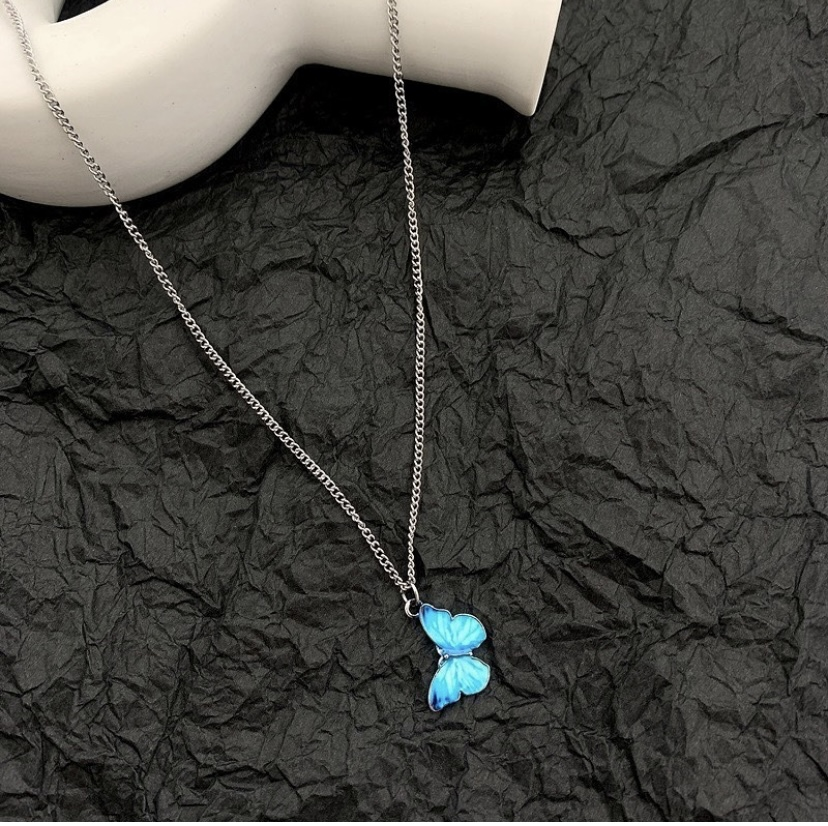

Te dije que SIEMPRE que voy a tu casa me pongo nerviosa, I don't know why. Pero una vez que llego y te veo, como que I feel at home. I know how much butterflies mean to you and all because of your grandpa, y digo esto no se compara porque tienes un tatuaje verdad jajajajaja pero I thought it was cute and it reminded me of you.
Donde escondiste mi sentido del tacto.